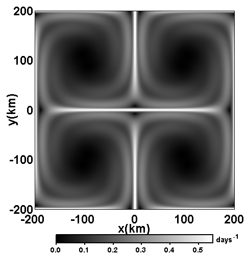
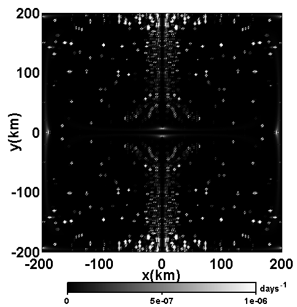
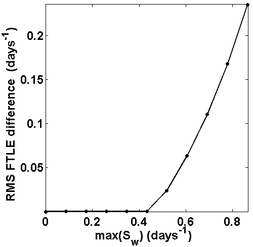

Zero (u,v) Vertical shear with nonzero vertical velocity:
u
z
, v
z
≠ 0 and w = 0 (the results are shown for the middle horizontal slice).



Incompressibility Condition:
it is tested by plotting |det(∇ x) - 1| with a range of grid resolutions.